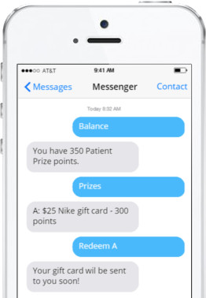
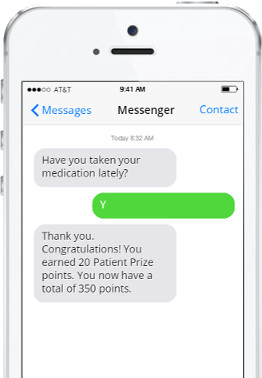

Stay on track

Text Message Check-Ins
Receive easy to follow prompts to help you maintain your health away from the hospital.

Responsive Status Prompts
Easily track your Patient Prize points and redeem them for prizes, all through your phone!
Receive easy to follow prompts to help you maintain your health away from the hospital.
Easily track your Patient Prize points and redeem them for prizes, all through your phone!